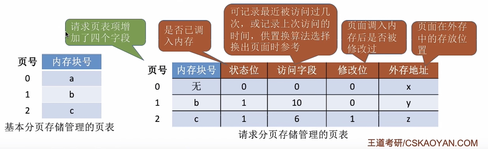
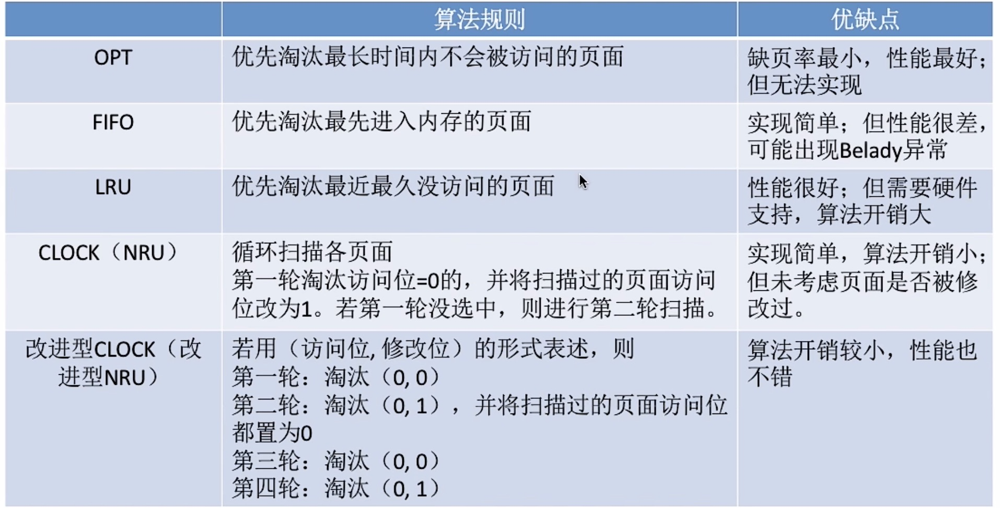
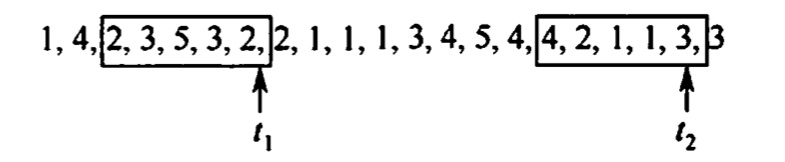

2022.07.16
虚拟内存管理虚拟内存的基本概念传统存储管理方式的特征局部性原理虚拟存储器的定义和特征虚拟内存技术的实现请求分页管理方式页表机制缺页中断机构地址变换机构页框分配驻留级大小内存分配策略物理块调入算法调入页面的时机从何处调入页面页面置换算法最佳（OPT）置换算法先进先出（FIFO）置换算法最近最久未使用（LRU）置换算法时钟（CLOCK）置换算法改进型的时钟置换算法抖动和工作集抖动工作集内存映射文件虚拟存储器性能影响因素地址翻译
多次性：多也可以多次调入内存
对唤性：暂时不用的作业部分调出内存
虚拟性：逻辑上扩充内存
注意
虚拟内存最大容量：由CPU寻址范围确定
虚拟内存实际容量：min{CPU寻址范围，内外存大小和}
三种方式：请求分页、请求分段、请求段页式
硬件支持：内存外存、页表机制、中断机构、地址变换机构
页号（隐藏）、内存块号、状态位（是否调入内存）、访问字段（for置换算法）、修改位、外存地址

缺页中断是内中断
中断
内中断(内部异常)：陷入Trap、故障(eg. 缺页中断)、终止
外中断：IO中断请求、人工干预
给一个进程分配的物理页框的集合就是驻留集
采用固定分配的算法！
From where？
Three Method
淘汰以后永远不使用的页面，或最长时间不使用的页面
缺点：人们无法预测未来，算法不能实现
淘汰最先进来的页面
缺点：最早来的不见得不经常访问的；Belady异常（物理块数增大，缺页故障数不减反增）
最近最常时间为访问的淘汰
我的理解：
- 普通的时钟置换算法，只考虑把没访问的也先换出去。改进的时钟置换算法，想把没写过的内容先换出去，因为这样不用改主存。
- （访问位，修改为）。先把没改没用（0，0）的换出去，找不到就找改了没用的（1，0）。这里可能会想，我都改了怎么可能没用过呢。实际上我的理解是，找（0，0）找（0，1）是一个整体。如果两轮没找到会刷新访问位。然后再来找（0，0），（0，1），不过这次就可以找到了，算法就可以结束了。
- 简化：「找(0,0)，找(0,1)，访问位(第一位)置0」

工作集：某段时间间隔内，进程要访问的页面的集合：比如下图t1的工作集是{2,3,5}

工作集窗口 Delta，比如上图的Delta = 5；（也就是保留五个）
把工作及窗口里边的重复的去掉得到工作集
内存映射文件（Memory- Mapped Files）与虚拟内存有些相似，将磁盘文件的全部或部分内容与进程虚拟地址空间的某个区域建立映射关系，便可以直接访问被映射的文件